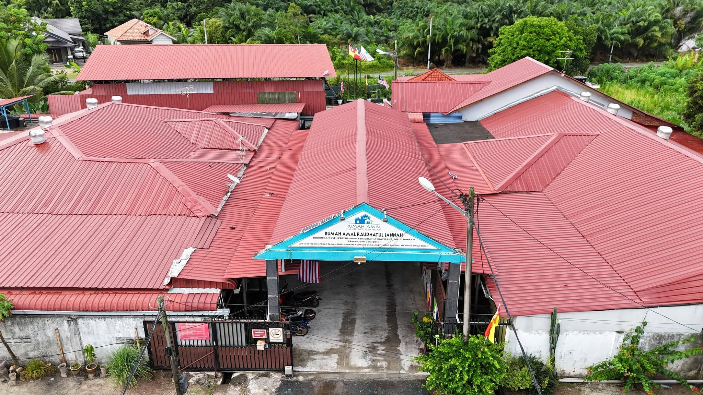

Food And Groceries
Suggested items may include rice, cooking oil, canned food, biscuits, milk, eggs, fresh ingredients, and other kitchen essentials.
For Donors
Donations can help support daily meals, school needs, hygiene items, clothing, utilities, maintenance, and welfare activities. Donors should confirm current needs directly with the organization before making contributions.
Do not transfer money to any bank account unless the account name and number are verified through an official source.
Ways To Help
Suggested items may include rice, cooking oil, canned food, biscuits, milk, eggs, fresh ingredients, and other kitchen essentials.
Suggested items may include school bags, stationery, books, uniforms, printing supplies, and learning materials.
Suggested items may include toiletries, detergent, cleaning supplies, towels, tissues, and personal care products.
Contributions may support electricity, water, maintenance, transport, medical needs, and general home operations.
Donation Instructions
Volunteer Support

Support does not always need to be financial. Volunteers may assist through approved programs such as tutoring, cleaning activities, event support, motivational sessions, or skills-based help. Group visits should be arranged in advance.
Group visits should be arranged properly. Turning up without notice may disturb the home schedule, so visitors should contact the organization first.
Contact Before VisitingResponsible Giving